Scope and Role
- Propulsion lead for the Solaris MkIII project, responsible for project scope, technical requirements and whollistic design of engine.
- First LOX hybrid in Australia, most powerful student engine in Australia, first Australian team at Race2Space, largest propulsion competition in the world.
- Features several innovative technologies for student teams, Composite Overwrapped Pressure Vessel combustion chamber, aluminium 3D printed cooled nozzle, helmholtz resonators and injector baffles.
Key Characteristics
Thermodynamic performance
Engine designed to deliver over 10 kN of peak thrust, 90 bar supply pressure and 60 bar chamber pressure, placing it among the most powerful student built hybrid engines globally and most powerful in Australia.
LOX hybrid propulsion
First Australian student hybrid to utilise liquid oxygen as the oxidiser, chosen for its performance advantage over N2O at scale, to be used for eventual 100k ft rocket, breaking Australian altitude record.
Regenerative cooling nozzle
Full cooling circuit through the nozzle walls using water as coolant for initial test, one of the first hybrid engines to do so, first additive cooled nozzle in Australia, directly contributed to design and post machining of this.
COPV combustion chamber
Composite overwrapped pressure vessel serves as the combustion chamber, saving significant mass over traditional metallic chamber. Significant design and manufacturing challenge, was involved in concepting, design and manufacturing of the article.
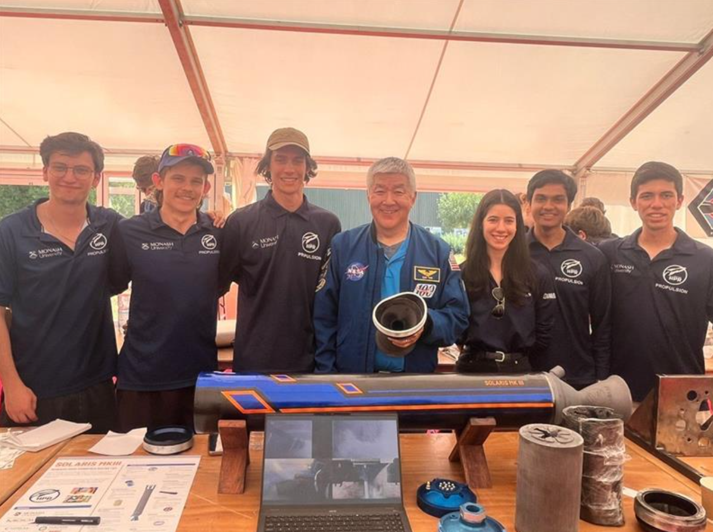
Race2Sapce Symposium
Photo with NASA astronaut Daniel Tani with broken nozzle signed by him.
Design Overview
Systems engineering
- I established all systems engineering processes including requirements tracking, risk assessments, design review processes (PDR and CDR), manufacturing timelines and competition logistics.
- Formatted and created technical requirements document, made or contributed to all of the requirements, risk tracking and project timeline.
- Dynamically adjusted manufacturing and testing timelines at weekly meeting with section to ensure project remained tracked and running at its most efficient.
- Was responsible for the post hot fire analysis, worked with the section to look at failure modes and characterising performance.
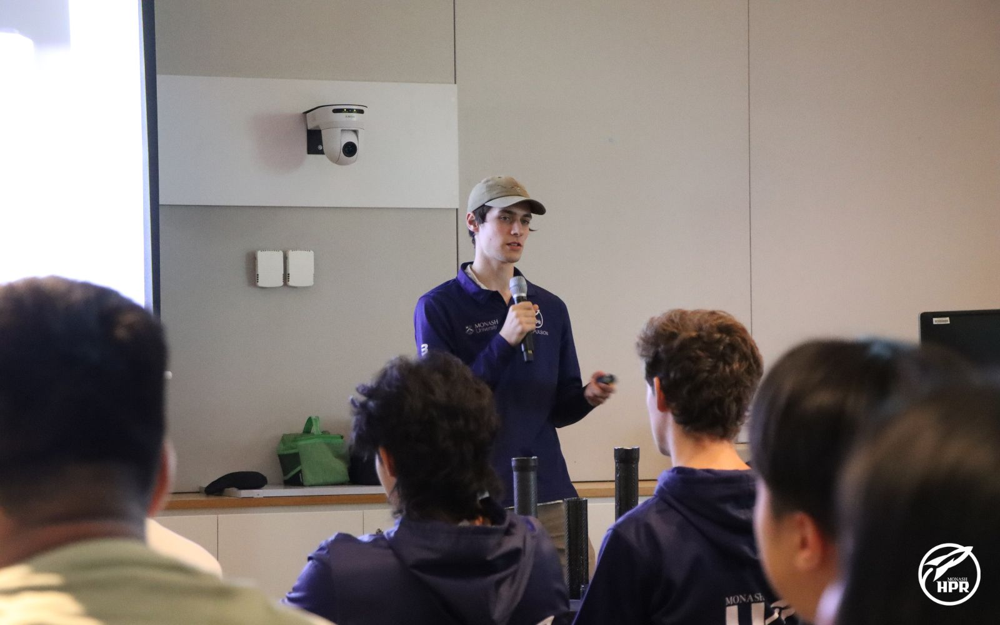
Solaris MkIII CDR
Myself presenting Solaris MkIII at the MHPR CDR.
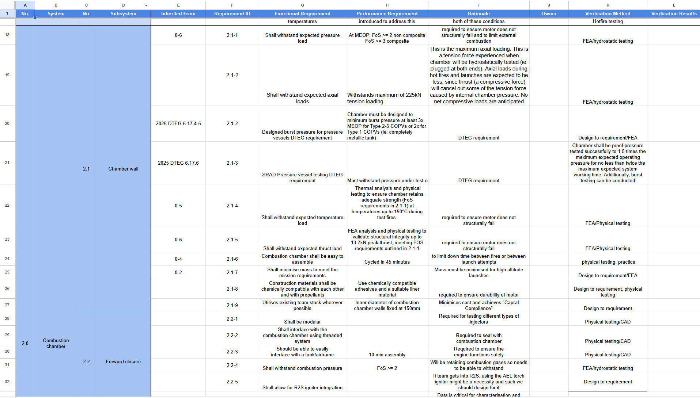
Requirements document
Engine requirements document showing requirements for each sub-system with rationale.
Composite overwrapped pressure vessel
- Directly contributed to COPV design, especially at concept level, manufacturing design iterations and layups, designed to be 6 inches and hold 60 bar chamber pressure.
- Layup: 1 fibreglass 2x2 twill (thermal) + 11 layers 3k carbon fibre 2x2 twill (structural) + outer carbon sleeve, wet-laid Technirez R2600/H2409 (Tg 180°C post-cure).
- Al7075 T6 couplers with M158x2.0 threads, PVC thermal liner protects composite from combustion gasses.
- Subscale validation: vessel burst at 39 bar vs 38 bar FEA prediction (Ansys Composite PrepPost), FoS > 3 on all composite components.
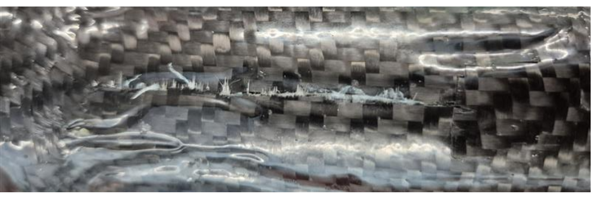
COPV burst test
Subscale COPV test article after hydrostatic burst testing, validating FEA predictions with a 39 bar failure pressure.
Fuel grain
- Directly contributed to fuel grain design: three segment fuel grain with fuel insert and two mixing plates separating the segments.
- Wagon wheel swirl geometry, wagon wheel provides flatter regression rate profile to cylindrical and the swirl provides superior mixing.
- Paraffin wax in 3D printed ABS gyroid matrix at 20% gyroidal infill
- Segments total 700 mm length, 85 mm initial port diameter, 140 mm outer diameter.
- PVC liner between grain and chamber wall as thermal backup, regresses far slower than paraffin/ABS if grain burns through.
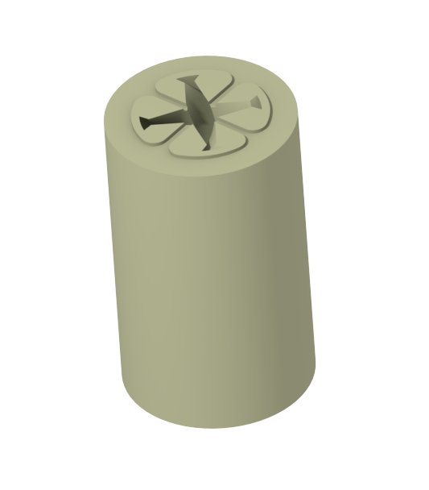
Fuel grain geometry
Render of the wagon wheel fuel grain showing the wagon wheel swirl geometry and mounting for mixing plates.
Regenerative nozzle
- Directly contributed to nozzle design: full cooling jacket, 40 helical channels (25° helix angle), water coolant at 1.3 kg/s and 75 bar.
- CFD predicted throat wall temperature of 151°C, within AlSi10Mg capability. Film cooling ports at nozzle inlet for additional thermal protection.
- RPA thermal modelling and custom thermal and mechanical stress analysis using thermal output modelling.
- All channels verified post-machining via shaker table to ensure successful de-powdering.
- Water test performed at Race2Space to verify nozzle safe for hotfire.
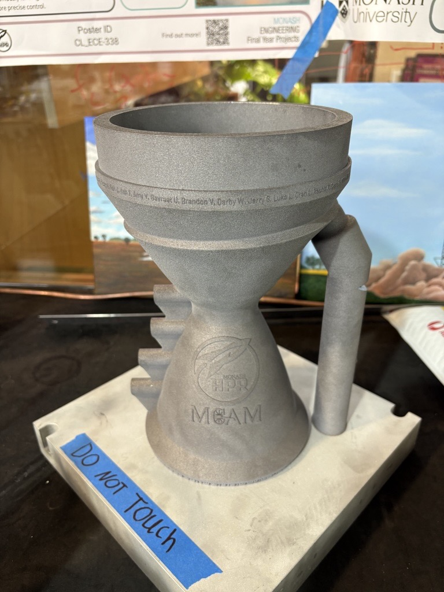
Nozzle hardware
Printed nozzle with cooling manifold, thermocouples ports and inlet/outlet ports.
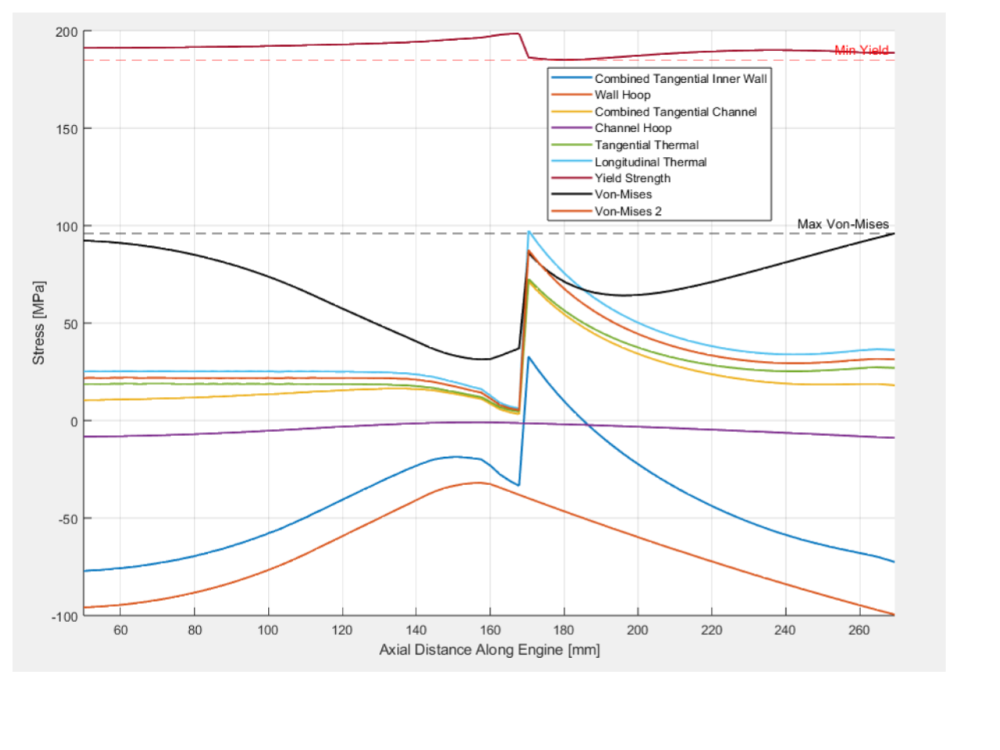
Nozzle thermal simulation
Script I made to determine nozzle thermal and mechanical stresses, taking into acount temperature difference across nozzle and strength of aluminium alloy at elevated temperatures to determine total nozzle FoS.
Additional subsystems
As propulsion lead I worked with the designated subsystem designers across all remaining engine components, contributing to requirements, design reviews, and problem solving while they led CAD and manufacturing:
- Injectors: Two interchangeable configurations (swirl and pintle) each with a dedicated forward closure.
- Mixing plates: Two four-spoke phenolic plates between fuel grain segments to disrupt the central oxidiser column and mitigate axial regression.
- Pre/post combustion chambers: A three-spoke phenolic baffle (swirl injector) targeting third tangential mode instabilities, and a post-chamber (L/D 1.5) ensuring complete combustion before the nozzle.
- Combustion stability: Twenty Helmholtz resonators around the chamber circumference targeting high frequency mode at 1,400 Hz, plus a fuel insert with higher infill (30%) to mitigate low-frequency hybrid instabilities around 80 Hz.
- Torch igniter: GOX/GH2 torch igniter (3.22 g/s O2, 0.80 g/s H2 at 10 bar, 2,846 K flame) with interchangeable orifice plates, using a spark plug.
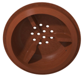
Baffles and pre-chamber
Three-spoke phenolic baffle and pre-combustion chamber assembly for the swirl injector configuration.
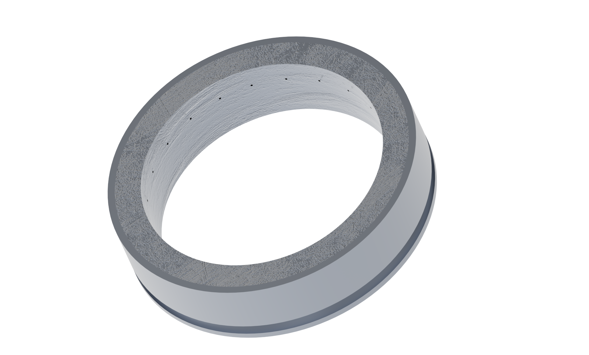
Resonator assembly
Helmholtz resonator ring showing the 20-port cavity layout around the chamber circumference for targeting the 1,400 Hz mode.

Torch ignitor
Torch ignitor test data showing ignition sequence and steady-state chamber pressure.
Engine annotation
- Complete propulsion assembly integrates COPV, injector, pre/post combustion chambers, fuel grain, resonator ring and nozzle as an assembled engine.
- All components designed in house, manufactured on manual/CNC lathes and mills and in the composite bay.
- Threads designed as controlled failure point (FoS 2.73), safer to eject nozzle than have a pressure vessel failure.
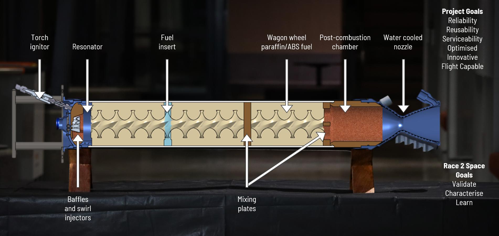
Engine assembly
Annotated view of the complete engine assembly showing all major subsystems and their integration.
Hotfire testing
At Race2Space 2025 in Westcott, UK, Solaris MkIII achieved steady-state thrust for approximately 0.5 seconds, which in flow time is long enough to characterise the entire engine performance using all the sensor data available to us.
However, during the burn the nozzle was ejected as the aft thread on the combustion chamber sheared off due to a manufacturing defect. While the test did not achieve its full target duration, the data gathered during that 0.5 seconds was invaluable. Chamber pressure, thrust and temperature data gave us all we needed to characterise our simulations and inform the next iteration of Solaris MkIII to be flown on a 100k ft rocket.
This is part of pushing boundaries at the student level. Building a 10 kN LOX hybrid this ambitous from the ground up with no blueprint means failures are inevitable, but the lessons learned are invaluable. The nozzle retention has since been redesigned with lessons from this test directly informing the next iteration along with an enormous amount of new data.
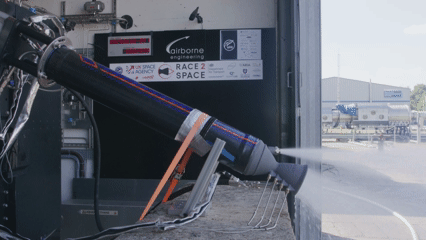
Hotfire test
Animation showing the nozzle ejecting from the engine shortly after steady-state combustion.
Race 2 Space Documentry
Documentry made by Race2Space featuring Monash HPR and interviews with myself.
Project Wrap-up
This project was a true team effort, and I am incredibly proud of what the propulsion team achieved. Leading such a dedicated group was a humbling experience, every test and late night in the workshop was a testament to our collective hard work.
This project is now heading towards becoming a flight capable engine carried forward by the team, and the focus is on final design reviews of the next iteration.

Race 2 Space poster
Poster artwork used to present the MKIII engine at the Race2Space symposium.

Race2Space Away Team Photo
Photo of the away team, only a small group of the 15+ people in propulsion who made this happen.
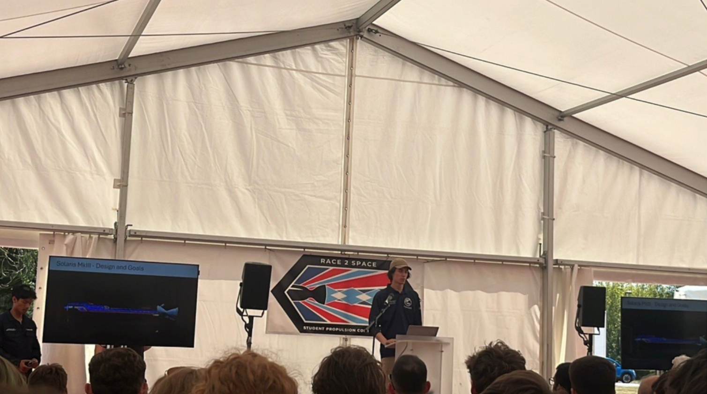
Stakeholder presentation
Presenting our hotfire results at the Race2Space symposium to other teams, industry and supporters.